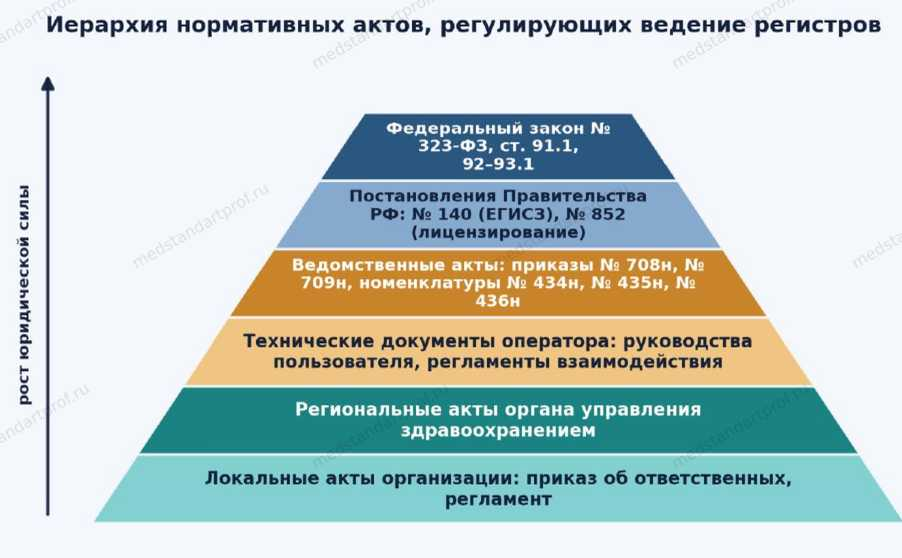
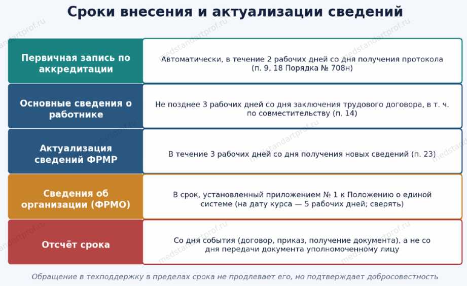
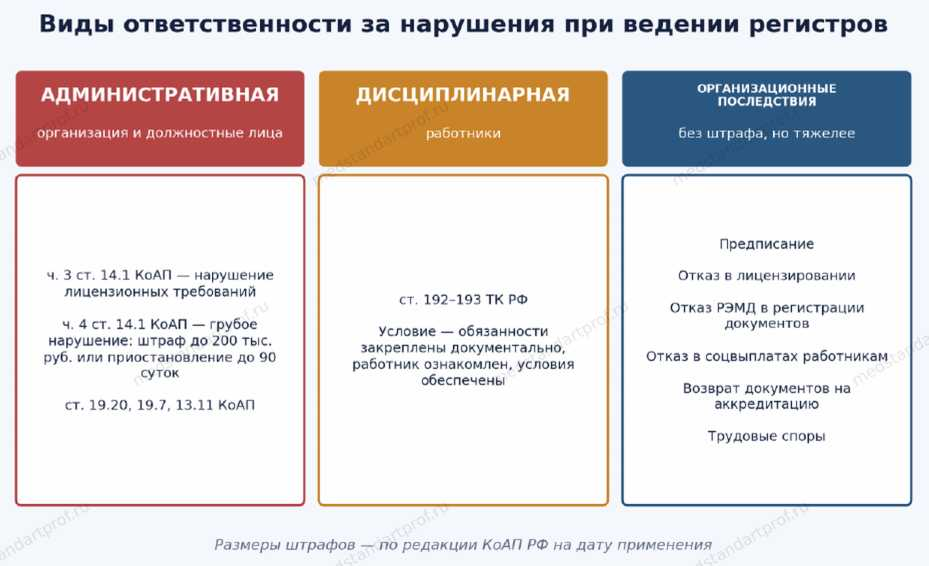
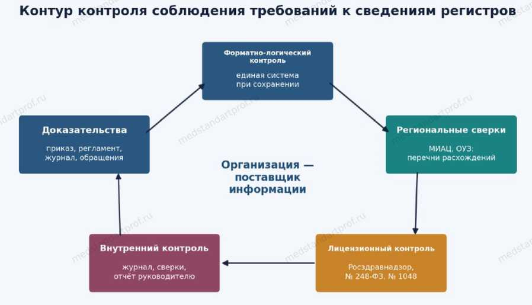
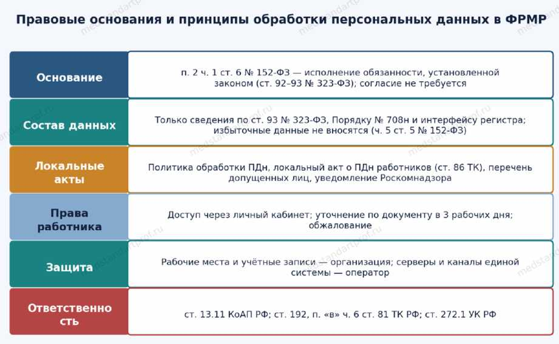
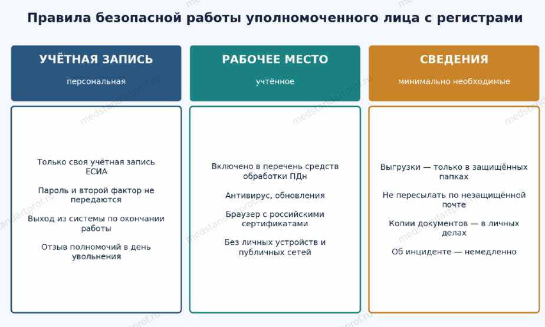

Уполномоченное лицо, вносящее сведения в регистры, действует не по собственному усмотрению и не по устным указаниям, а на основании иерархически выстроенной системы нормативных правовых актов. Знание этой системы необходимо по двум причинам: чтобы правильно определять состав и сроки внесения сведений и чтобы обоснованно отвечать на запросы проверяющих органов, органа управления здравоохранением и самих работников.
Цель лекции — систематизировать нормативные правовые акты, регулирующие ведение ФРМО и ФРМР, раскрыть содержание ключевых норм и показать, как они применяются в повседневной работе.
Нормативная база ведения регистров выстроена по уровням, каждый из которых конкретизирует предыдущий.
|
Уровень |
Акт |
Что устанавливает |
|
Федеральный закон |
Федеральный закон от 21.11.2011 № 323-ФЗ, глава 10 |
Само существование единой системы, обязанность персонифицированного учёта, состав учитываемых сведений о работниках и обучающихся |
|
Постановление Правительства |
Постановление от 09.02.2022 № 140 (Положение о единой системе) |
Состав подсистем, поставщики и пользователи информации, состав сведений и сроки их размещения (приложение № 1) |
|
Постановление Правительства |
Постановление от 01.06.2021 №852 (Положение о лицензировании) |
Размещение сведений в единой системе как лицензионное требование |
|
Ведомственный акт |
Приказ Минздрава России от 28.10.2022 № 708н |
Порядок ведения персонифицированного учёта: кто, что, в какие сроки вносит в ФРМР, порядок актуализации и контроль |
|
Ведомственный акт |
Приказ Минздрава России от 28.10.2022 № 709н |
Положение об аккредитации специалистов, использование ФРМР и личного кабинета при аккредитации |
|
Ведомственные акты |
Приказы Минздрава России о номенклатурах должностей, специальностей, квалификационных требованиях |
Справочники, из которых выбираются значения полей регистров |
|
Технические документы оператора |
Руководства пользователя ФРМО и ФРМР, интеграционные профили, регламенты информационного взаимодействия |
Порядок работы в интерфейсе, форматы обмена, правила форматно-логического контроля |
|
Региональные акты |
Акты органа управления здравоохранением субъекта Российской Федерации |
Порядок взаимодействия с региональной системой, региональные сроки сверок, ответственные |
|
Локальные акты организации |
Приказ о назначении ответственных, регламент ведения регистров |
Распределение обязанностей внутри организации |
Принцип применения: акт нижестоящего уровня не может устанавливать требования, противоречащие вышестоящему, но может их конкретизировать. Так, руководство пользователя не может отменить трёхдневный срок из Порядка № 708н, но определяет, какие именно поля интерфейса должны быть заполнены для выполнения этого требования.

Рисунок 1. Иерархия нормативных актов, регулирующих ведение регистров
Статья определяет цели создания единой системы, её оператора, перечень обеспечиваемых функций и круг поставщиков информации. Ключевая для организаций норма — обязанность размещать в единой системе сведения в составе и порядке, установленных Правительством Российской Федерации. Часть 3 статьи относит к поставщикам информации медицинские организации государственной, муниципальной и частной систем здравоохранения, а также образовательные и фармацевтические организации.
Статья 92 устанавливает, что персонифицированный учёт при осуществлении медицинской деятельности ведётся в единой системе, а порядок его ведения утверждает уполномоченный федеральный орган — Минздрав России. Статья 93 перечисляет сведения о лицах, участвующих в осуществлении медицинской и фармацевтической деятельности, подлежащие учёту: фамилия, имя, отчество, пол, дата рождения, гражданство, данные документа, удостоверяющего личность, СНИЛС, место рождения, жительства и регистрации, сведения об образовании, наименование организации-работодателя, должность, сведения о членстве в профессиональных некоммерческих организациях.
Статья введена в 2022 году и распространяет персонифицированный учёт на лиц, обучающихся по программам среднего профессионального и высшего медицинского и фармацевтического образования. Для медицинской организации это означает, что выпускник при трудоустройстве, как правило, уже имеет запись в регистре, созданную образовательной организацией.
Положение состоит из разделов, определяющих: общие положения и термины; состав подсистем и их функции; порядок функционирования единой системы; поставщиков и пользователей информации; порядок информационного взаимодействия; требования к защите информации. К Положению прилагаются перечни сведений, размещаемых в подсистемах, с указанием поставщика и срока размещения.
Приложение № 1 к Положению устанавливает для каждой подсистемы состав сведений, поставщика и срок размещения. Для ФРМО и ФРМР поставщиком являются медицинские (фармацевтические, образовательные) организации; сведения о работниках размещаются в срок не позднее трёх рабочих дней, сведения об организациях — в срок, установленный для соответствующей группы сведений (на дату подготовки курса — пять рабочих дней со дня изменения). Минздрав России неоднократно инициировал сокращение сроков для ФРМО, поэтому действующее значение подлежит сверке по актуальной редакции Положения перед каждым циклом обучения.
Положение возлагает на органы исполнительной власти субъектов Российской Федерации в сфере охраны здоровья обязанности по обеспечению функционирования региональных систем и контролю полноты и достоверности сведений медицинских организаций региона. На практике это реализуется через региональные информационноаналитические центры, которые проверяют данные, направляют замечания и согласуют отдельные действия в ФРМО (например, регистрацию новой организации или изменение её типа).
Приказ Минздрава России от 28.10.2022 № 708н утвердил Порядок ведения персонифицированного учёта лиц, участвующих в осуществлении медицинской и фармацевтической деятельности, и обучающихся. Порядок действует с 1 марта 2023 года по 1 марта 2028 года и заменил приказ от 31.12.2013 № 1159н, который утратил силу. Ссылки на приказ № 1159н в локальных актах организации должны быть заменены.
Порядок состоит из четырёх разделов:
I. Общие положения — перечень сведений о работниках (пункт 2) и обучающихся (пункт 3); указание, что учёт ведётся в федеральном регистре, входящем в единую систему (пункт 4); деление сведений на персональные данные, основные сведения и иные сведения (пункт 8).
II. Первичное внесение — автоматическое создание записи по протоколу аккредитационной комиссии в течение двух рабочих дней (пункт 9); создание записи уполномоченным лицом для лиц с иным образованием и младшего медицинского персонала (пункт 10); создание записи об обучающемся по данным федеральной информационной системы обеспечения проведения государственной итоговой аттестации и приёма (пункт И); состав персональных данных при первичном внесении (пункт 12); формирование уникального номера реестровой записи и личного кабинета (пункт 13).
III. Внесение основных сведений — уполномоченные лица вносят основные сведения не позднее трёх рабочих дней со дня заключения трудового договора, в том числе по совместительству, на основании первичных документов кадрового учёта и документов, представленных работником лично (пункт 14); внесение основных сведений является лицензионным требованием, предусмотренным подпунктом «ж» пункта 5 Положения о лицензировании медицинской деятельности (пункт 15); контроль осуществляют руководители организаций (пункт 16).
IV. Актуализация сведений — актуализация персональных данных и сведений об образовании уполномоченными лицами на основании документов работника, представленных лично или через личный кабинет (пункт 17); автоматическая актуализация сведений об аккредитации (пункт 18) и об образовании по данным федерального реестра сведений о документах об образовании (пункт 19); актуализация сведений о трудоустройстве в автоматическом режиме на основании сведений, внесённых уполномоченными лицами в ФРМО (пункт 21); форматнологический контроль и предотвращение дублирующих записей (пункт 22); срок актуализации — три рабочих дня со дня получения новых сведений (пункт 23); контроль — руководитель организации (пункт 24).
Из Порядка вытекают правила, которые должны быть закреплены в локальном регламенте организации:
1. Уполномоченные лица назначаются руководителем, и сведения о них включаются в заявку на регистрацию организации в ФРМО.
2. Основанием для внесения сведений являются первичные документы кадрового учёта и документы, представленные работником лично; уполномоченное лицо не вправе вносить сведения «со слов».
3. Срок — три рабочих дня — исчисляется со дня заключения трудового договора или получения новых сведений; отпуск или болезнь уполномоченного лица не приостанавливают течение срока, что требует назначения замещающего лица.
4. Контроль возложен на руководителя, следовательно, в организации должна существовать процедура периодической отчётности уполномоченных лиц перед руководителем.
Рисунок 2. Сроки внесения и актуализации сведений по Порядку № 708н и Положению о единой системе
5. Положение об аккредитации специалистов (приказ № 709н)
Положение об аккредитации, утверждённое приказом Минздрава России от 28.10.2022 № 709н, связано с регистром в двух аспектах. Во-первых, сведения об аккредитации поступают в ФРМР автоматически из федерального аккредитационного центра и становятся основанием для первичного создания записи. Во-вторых, для периодической аккредитации специалист направляет документы (заявление, портфолио, сведения об образовательной активности) через личный кабинет в ФРМР, а данные о месте работы, должности и стаже берутся из регистра. Ошибочные сведения о трудоустройстве в ФРМР — типичная причина возврата документов аккредитационной комиссией.
6. Справочники и номенклатуры
Значения полей регистров выбираются из справочников федерального реестра нормативно-справочной информации, которые формируются на основании ведомственных актов. Для ФРМР ключевыми являются номенклатура должностей медицинских и фармацевтических работников и номенклатура специальностей. С 1 сентября 2026 года применяются приказы Минздрава России от 14.05.2026 № 434н (номенклатура

должностей), № 435н (номенклатура специальностей) и № 436н (квалификационные требования), заменившие ранее действовавшие приказы № 205н, № 176н, № 700н, № 83н и № 206н. Переход на новые номенклатуры сопровождается обновлением справочников в единой системе; уполномоченное лицо должно сверять наименования должностей в штатном расписании организации с актуальной номенклатурой, поскольку должность, отсутствующая в справочнике, не может быть выбрана в регистре.
7. Иные акты, влияющие на ведение регистров
|
Акт |
Значение для регистров |
|
Постановление Правительства РФ от 31.12.2022 №2568 |
Специальные социальные выплаты медицинским работникам; реестры организаций сопоставляются со сведениями о должности и ставке |
|
Федеральный закон от 27.07.2006 № 152-ФЗ |
Обработка персональных данных работников при ведении ФРМР |
|
Федеральный закон от 06.04.2011 № 63-ФЗ |
Электронная подпись, применяемая при подаче заявок на доступ и подписании документов |
|
Постановление Правительства РФ от 28.11.2011 №977 |
Единая система идентификации и аутентификации — вход в подсистемы |
|
Трудовой кодекс Российской Федерации, глава 14 |
Защита персональных данных работника, права работника на доступ к своим данным |
|
Приказ Росстата об утверждении формы № 30 |
Статистическая форма «Сведения о медицинской организации», данные которой сверяются с ФРМО и ФРМР |
8. Как отслеживать изменения
Нормативная база регистров изменяется чаще, чем большинство других областей регулирования здравоохранения. Источники, которые уполномоченное лицо обязано регулярно проверять:
• официальный интернет-портал правовой информации (pravo.gov.ru) — новые редакции Положения о единой системе и Порядка № 708н;
• портал оперативного взаимодействия участников ЕГИСЗ — новости об изменениях интерфейса, новые версии руководств пользователя, регламенты;
• письма и рассылки органа управления здравоохранением и регионального информационно-аналитического центра;
• уведомления в интерфейсе регистров.
Порядок такой сверки закрепляется в регламенте организации (модуль 3) и в документе «Нормативная база курса».
Правовая база ведения регистров выстроена от Федерального закона № 323-ФЗ через Положение о единой системе к Порядку персонифицированного учёта и техническим документам оператора. Для практической работы наиболее важны: перечень учитываемых сведений (статья 93 закона, пункт 2 Порядка), сроки — три рабочих дня для ФРМР и установленный Положением срок для ФРМО, различие между автоматическим первичным внесением и внесением основных сведений уполномоченными лицами, а также прямое отнесение ведения регистра к лицензионным требованиям. Все ссылки на утративший силу приказ № 1159н должны быть исключены из локальных актов.
1. Федеральный закон от 21.11.2011 № 323-ФЗ «Об основах охраны здоровья граждан в Российской Федерации» (с последующими изменениями и дополнениями), статьи 91.1, 92, 93, 93.1.
2. Постановление Правительства Российской Федерации от 09.02.2022 № 140 «О единой государственной информационной системе в сфере здравоохранения» (с последующими изменениями и дополнениями).
3. Постановление Правительства Российской Федерации от 01.06.2021 № 852 «О лицензировании медицинской деятельности...» (с последующими изменениями и дополнениями).
4. Приказ Минздрава России от 28.10.2022 № 708н «Об утверждении порядка ведения персонифицированного учета лиц, участвующих в осуществлении медицинской деятельности и фармацевтической деятельности, лиц, обучающихся по образовательным программам...».
5. Приказ Минздрава России от 28.10.2022 № 709н «Об утверждении Положения об аккредитации специалистов» (с последующими изменениями и дополнениями).
6. Приказы Минздрава России от 14.05.2026 № 434н, № 435н, № 436н (номенклатура должностей, номенклатура специальностей, квалификационные требования), применяются с 01.09.2026.
7. Постановление Правительства Российской Федерации от 31.12.2022 № 2568 «О дополнительной государственной социальной поддержке медицинских работников...» (с последующими изменениями и дополнениями).
8. Официальный интернет-портал правовой информации. — URL: pravo.gov.Ri
Ведение регистров часто воспринимается как рутинная отчётность, за которой не стоит реальных последствий. Это представление ошибочно: размещение сведений в единой системе отнесено к лицензионным требованиям, а нарушение лицензионных требований влечёт административную ответственность организации и её должностных лиц, вплоть до приостановления деятельности. Кроме того, недостоверные сведения порождают последствия для работников — отказы в выплатах и аккредитации, — которые могут стать предметом трудовых споров.
Цель лекции — раскрыть содержание лицензионного требования о размещении сведений в единой системе, виды ответственности за его нарушение и порядок контроля, а также определить, как организация может минимизировать риски.
Нормативные акты предъявляют к сведениям регистров три взаимосвязанных требования.
Полнота — все объекты, подлежащие учёту (организация, подразделения, здания, должности, работники), внесены, и по каждому объекту заполнены все обязательные поля. Неполнота проявляется как отсутствие подразделения, «висящая» незанятая должность, работник без сведений об образовании.
Достоверность — внесённые сведения соответствуют первичным документам и фактическому положению дел. Недостоверность — ставка 1,0 в регистре при 0,5 в трудовом договоре, должность «врач-терапевт» при фактической «врач общей практики», адрес подразделения, не совпадающий с адресом в лицензии.
Своевременность (актуальность) — сведения внесены и изменены в установленные сроки. Просрочка — уволенный работник, числящийся занимающим должность спустя месяц; новое подразделение, внесённое через полгода после открытия.
Нарушение любого из трёх требований является нарушением обязанности поставщика информации. Проверяющие органы, как правило, выявляют все три вида нарушений при сопоставлении регистров с документами организации.
Положение о лицензировании медицинской деятельности, утверждённое постановлением Правительства Российской Федерации от 01.06.2021 № 852, в пункте 5 устанавливает лицензионные требования к лицензиату. Одним из них является размещение в единой государственной информационной системе в сфере здравоохранения сведений о медицинской организации (в федеральном реестре медицинских и фармацевтических организаций) и о её работниках (в федеральном регистре медицинских и фармацевтических работников) в составе, установленном Положением о единой системе. Порядок № 708н в пункте 15 прямо указывает, что внесение основных сведений в федеральный регистр является лицензионным требованием, предусмотренным подпунктом «ж» пункта 5 Положения о лицензировании.
Отнесение размещения сведений к лицензионным требованиям означает:
1. Требование действует с момента получения лицензии и в течение всего срока её действия, а не только при первичной регистрации.
2. При лицензировании новых видов работ и услуг или новых адресов лицензирующий орган сопоставляет заявление со сведениями ФРМО; расхождения являются основанием для отказа или возврата документов.
3. Соблюдение требования проверяется в рамках лицензионного контроля и государственного контроля качества и безопасности медицинской деятельности.
4. Нарушение требования влечёт административную ответственность по статьям Кодекса Российской Федерации об административных правонарушениях, предусмотренным для нарушений лицензионных требований.
При проверке сопоставляются:
• реестр лицензий Росздравнадзора и раздел «Лицензии» ФРМО — номера, адреса, перечень работ и услуг;
• штатное расписание организации и раздел «Штатное расписание» ФРМО;
• трудовые договоры и приказы о приёме, переводе, увольнении и сведения о трудоустройстве в ФРМР;
• документы об образовании, сертификаты и свидетельства об аккредитации и сведения об образовании в ФРМР;
• фактическое наличие подразделений и оборудования и соответствующие разделы ФРМО.
Осуществление предпринимательской деятельности с нарушением лицензионных требований квалифицируется по части 3 статьи 14.1 КоАП РФ, с грубым нарушением — по части 4 той же статьи. Для организаций, деятельность которых не связана с извлечением прибыли (государственные и муниципальные учреждения), применяются части 2 и 3 статьи 19.20 КоАП РФ.
|
Норма |
Нарушение |
Санкция для должностных лиц |
Санкция для юридических лиц |
|
Часть 3 статьи 14.1 КоАП РФ |
Нарушение лицензионных требований |
Предупреждение или штраф от 3 000 до 4 000 рублей |
Предупреждение или штраф от 30 ООО до 40 000 рублей |
|
Часть 4 статьи 14.1 КоАП РФ |
Грубое нарушение лицензионных требований |
Штраф от 5 000 до 10 000 рублей |
Штраф от 100 000 до 200 000 рублей или административное приостановление деятельности на срок до 90 суток |
|
Части 2, 3 статьи 19.20 КоАП РФ |
Нарушение (грубое нарушение) требований лицензии на деятельность, не связанную с извлечением прибыли |
Штраф либо дисквалификация (по части 3) |
Штраф либо приостановление деятельности (по части 3) |
Отнесение нарушения к грубым определяется пунктом 6 Положения о лицензировании, который перечисляет, невыполнение каких лицензионных требований признаётся грубым нарушением. Размеры штрафов приведены по состоянию на дату подготовки курса и подлежат сверке по действующей редакции КоАП РФ.
Помимо лицензионных норм, непредставление или несвоевременное представление в государственный орган сведений, представление которых
предусмотрено законом, а равно представление их в неполном объёме или в искажённом виде образует состав статьи 19.7 КоАП РФ. Эта норма применяется реже, поскольку специальные нормы о лицензионных требованиях имеют приоритет, однако она может применяться к организациям, не имеющим лицензии на медицинскую деятельность, но обязанным вести регистр (например, образовательным).
3.3. Нарушения в сфере персональных данных
Неправомерная обработка персональных данных работников при ведении ФРМР (обработка сверх состава, установленного законом; передача третьим лицам без основания; отсутствие локальных актов) образует составы статьи 13.11 КоАП РФ. Подробнее — в лекции 2.3.
Рисунок 1. Виды ответственности за нарушения при ведении регистров
4. Иные последствия
Помимо административной ответственности, нарушения при ведении регистров влекут последствия, которые для организации нередко существеннее штрафа.

|
Последствие |
Механизм |
|
Предписание об устранении нарушений |
Выдаётся по итогам контрольного мероприятия; неисполнение предписания — самостоятельное правонарушение (часть 21 статьи 19.5 КоАП РФ) |
|
Отказ в предоставлении или переоформлении лицензии |
Расхождение заявления со сведениями ФРМО |
|
Невозможность регистрации электронных медицинских документов |
Отсутствие или некорректность сведений о работнике в ФРМР |
|
Отказ в назначении специальных социальных выплат работникам |
Расхождение реестра организации со сведениями о должности и ставке |
|
Возврат документов при аккредитации специалиста |
Некорректные сведения о трудоустройстве и стаже |
|
Замечания и требования органа управления здравоохранением |
Результаты региональных сверок; включение организации в перечни «проблемных» |
|
Искажение статистической отчётности |
Расхождение данных формы № 30 и регистров |
|
Трудовые споры |
Работник оспаривает сведения, повлиявшие на выплаты или стаж |
5. Ответственность внутри организации
5.1. Руководитель
Порядок № 708н возлагает контроль внесения и актуализации сведений на руководителя организации. Руководитель является должностным лицом, к которому применяются санкции по статье 14.1 КоАП РФ; ссылка на то, что сведения не внёс подчинённый работник, от ответственности не освобождает. Руководитель обязан назначить уполномоченных лиц, обеспечить их доступ к регистрам, установить порядок передачи им первичных документов и организовать контроль.
5.2. Уполномоченное лицо
Уполномоченное лицо несёт дисциплинарную ответственность в соответствии с Трудовым кодексом Российской Федерации (статьи 192— 193) за неисполнение обязанностей, возложенных приказом и должностной инструкцией. Условие привлечения к ответственности — обязанности закреплены документально, работник с ними ознакомлен, ему обеспечены условия для выполнения (доступ, время, первичные документы). Уполномоченное лицо может быть привлечено и как должностное лицо по КоАП РФ, если оно наделено организационно-распорядительными функциями.
5.3. Подразделения-источники
Кадровая служба, отвечающая за своевременную передачу уполномоченному лицу приказов и договоров, руководители подразделений, обязанные сообщать об изменениях структуры и оборудования, также несут дисциплинарную ответственность, если их обязанности закреплены в регламенте. Отсутствие такого закрепления — основная организационная причина нарушений: уполномоченное лицо узнаёт о событии позже установленного срока.
6. Контроль и проверки
6.1. Виды контроля
Соблюдение требований проверяется в рамках:
• лицензионного контроля — Росздравнадзор, в соответствии с Федеральным законом от 31.07.2020 № 248-ФЗ «О государственном контроле (надзоре) и муниципальном контроле в Российской Федерации» и Положением о лицензировании;
• государственного контроля качества и безопасности медицинской деятельности — Росздравнадзор, постановление Правительства Российской Федерации от 29.06.2021 № 1048;
• ведомственного контроля — орган управления здравоохранением в отношении подведомственных организаций;
• мониторинга оператора и региональных центров автоматизированные сверки, по результатам которых организации направляются перечни расхождений.
6.2. Профилактика
Федеральный закон № 248-ФЗ предусматривает профилактические мероприятия — информирование, предостережения, профилактические визиты. Предостережение о недопустимости нарушения обязательных требований может быть выдано при обнаружении признаков нарушения, в том числе по данным регистров. Организация вправе подать возражение на предостережение, для чего необходимо документально подтвердить, что сведения внесены в срок либо что расхождение обусловлено технической причиной, зафиксированной обращением в техническую поддержку.
6.3. Доказательства добросовестности
При проверке организация должна быть готова представить:
• приказ о назначении уполномоченных лиц и регламент ведения регистров;
• журнал (реестр) внесения и актуализации сведений с датами событий и датами внесения;
• обращения в техническую поддержку и ответы на них — при расхождениях, вызванных техническими причинами;
• результаты внутренних сверок и акты устранения расхождений.
Наличие этих документов не исключает ответственности при реальных нарушениях, но позволяет доказать своевременность действий организации и снизить санкцию до предупреждения.

Рисунок 2. Контур контроля соблюдения требований к сведениям регистров
7. Типичные ситуации и их правовая оценка
Ситуация 1. Врач принят на работу 1 марта, сведения в ФРМР внесены 15 марта. Нарушен трёхдневный срок Порядка № 708н; при выявлении — нарушение лицензионного требования. Смягчающее обстоятельство — если задержка вызвана ожиданием ответа технической поддержки на обращение, поданное в срок.
Ситуация 2. Работник уволен год назад, в ФРМР продолжает числиться. Нарушение своевременности и достоверности; кроме того, «занятая» должность искажает сведения об укомплектованности. Если по этому работнику направлялись реестры для социальных выплат — возможны требования о возврате средств.
Ситуация 3. Организация получила лицензию на новый адрес, в ФРМО адрес не внесён, подразделение по этому адресу не создано. Нарушение полноты; при следующем лицензионном действии — основание для возврата документов; электронные документы, оформленные по этому адресу, не будут зарегистрированы.
Ситуация 4. В штатном расписании организации должность «врач-косметолог», в ФРМО внесена «врач-дерматовенеролог», поскольку ответственный не нашёл нужную позицию. Недостоверность; при проверке — вопросы к квалификации работника и к соответствию лицензии; при аккредитации работника — расхождение стажа по специальности.
Заключение
Размещение сведений в ФРМО и ФРМР — лицензионное требование, а не факультативная отчётность. За его нарушение организация и её руководитель несут административную ответственность, а сама организация — риски отказа в лицензировании, невозможности регистрации документов и споров с работниками. Ответственность распределяется по трём уровням — руководитель, уполномоченные лица, подразделения-источники, — и минимизировать риски можно только документальным закреплением обязанностей, ведением журнала внесения сведений и фиксацией обращений в техническую поддержку. Эти инструменты создаются в модуле 3.
Список источников
1. Постановление Правительства Российской Федерации от 01.06.2021 № 852 «О лицензировании медицинской деятельности...» (с последующими изменениями и дополнениями), пункты 5, 6.
2. Приказ Минздрава России от 28.10.2022 № 708н «Об утверждении порядка ведения персонифицированного учета...», пункты 15, 16, 24.
3. Кодекс Российской Федерации об административных правонарушениях (с последующими изменениями и дополнениями), статьи 13.11,14.1,19.5,19.7,19.20.
4. Федеральный закон от 31.07.2020 № 248-ФЗ «О государственном контроле (надзоре) и муниципальном контроле в Российской Федерации» (с последующими изменениями и дополнениями).
5. Постановление Правительства Российской Федерации от 29.06.2021 № 1048 «Об утверждении Положения о федеральном государственном контроле (надзоре) качества и безопасности медицинской деятельности» (с последующими изменениями и дополнениями).
6. Трудовой кодекс Российской Федерации (с последующими изменениями и дополнениями), статьи 192, 193.
7. Постановление Правительства Российской Федерации от 09.02.2022 № 140 «О единой государственной информационной системе в сфере здравоохранения» (с последующими изменениями и дополнениями).
ФРМР содержит персональные данные десятков тысяч работников — паспортные данные, СНИЛС, адреса, сведения об образовании. Уполномоченное лицо организации, имеющее доступ к регистру, является оператором, обрабатывающим персональные данные от имени организации, и обязано соблюдать требования законодательства о персональных данных и информационной безопасности. Нарушения в этой области влекут самостоятельную ответственность, не зависящую от качества ведения самого регистра.
Цель лекции — определить правовые основания обработки персональных данных работников при ведении ФРМР, обязанности организации как оператора персональных данных и правила информационной безопасности при работе с регистрами.
Обработка персональных данных регулируется Федеральным законом от 27.07.2006 № 152-ФЗ «О персональных данных». Применительно к работникам действует также глава 14 Трудового кодекса Российской Федерации «Защита персональных данных работника» (статьи 86-90). Для сведений, обрабатываемых в единой системе, специальные нормы содержат статьи 91-93.1 Федерального закона № 323-ФЗ и Положение о единой системе.
Обработка персональных данных работника при ведении ФРМР осуществляется на основании пункта 2 части 1 статьи 6 Федерального закона № 152-ФЗ — для достижения целей, предусмотренных законом, и осуществления возложенных законодательством на оператора функций и обязанностей. Обязанность ведения персонифицированного учёта установлена статьями 92-93 Федерального закона № 323-ФЗ, поэтому согласие работника на передачу его данных в ФРМР не требуется. Это положение важно на практике: отказ работника «дать согласие» не освобождает организацию от обязанности внести сведения и не является основанием для невнесения.
Вместе с тем работник имеет право знать, какие его данные и в какую систему передаются. Рекомендуется при приёме на работу знакомить работника с уведомлением о том, что сведения о нём вносятся в ФРМР в соответствии с законом, и с перечнем вносимых сведений. Форма уведомления включена в комплект шаблонов курса.
Организация вправе вносить в ФРМР только те сведения, которые предусмотрены статьёй 93 Федерального закона № 323-ФЗ, Порядком № 708н и интерфейсом регистра. Внесение дополнительных сведений (например, в поля комментариев — информации о состоянии здоровья, семейном положении, дисциплинарных взысканиях) является избыточной обработкой и нарушает принцип соответствия объёма данных целям обработки (часть 5 статьи 5 Федерального закона № 152-ФЗ).
Организация как оператор персональных данных обязана иметь:
• политику в отношении обработки персональных данных (часть 2 статьи 18.1 Федерального закона № 152-ФЗ);
• локальный акт, определяющий порядок обработки персональных данных работников, с которым работники знакомятся под подпись (статья 86 Трудового кодекса);
• перечень лиц, допущенных к обработке персональных данных, — уполномоченные лица по ФРМР должны быть в него включены;
• уведомление Роскомнадзора об обработке персональных данных (статья 22 Федерального закона № 152-ФЗ), если организация не подпадает под исключения.
Передача сведений в ФРМР должна быть отражена в этих документах как цель и способ обработки.
Рисунок 1. Правовые основания и принципы обработки персональных данных в ФРМР
2. Права работника
Работник — субъект персональных данных — имеет право (статья 14 Федерального закона № 152-ФЗ, статья 89 Трудового кодекса):
• на получение сведений о том, какие его данные обрабатываются и кому передаются;
• на доступ к своим данным — реализуется через личный кабинет медицинского работника в ФРМР;
• на уточнение, блокирование или уничтожение неполных, устаревших, неточных данных — реализуется через обращение к уполномоченному лицу организации или через личный кабинет;
• на обжалование действий оператора в Роскомнадзор или в суд.
Порядок № 708н предусматривает, что актуализация ряда сведений (персональные данные, образование) осуществляется на основании документов, представленных работником лично или посредством личного кабинета. Организация обязана установить процедуру рассмотрения обращений работников о несоответствии сведений в регистре: кто принимает обращение, в какой срок сверяет с документами, кто вносит исправление. Срок, установленный Порядком для актуализации, — три рабочих дня со дня получения новых сведений.

Защита информации в самой единой системе (серверы, каналы, программное обеспечение федеральных подсистем) — обязанность оператора единой системы в соответствии с Положением о ней. Организация отвечает за:
• защиту рабочих мест, с которых осуществляется доступ к регистрам;
• защиту учётных записей и средств электронной подписи уполномоченных лиц;
• защиту первичных документов и локальных копий данных (выгрузок, отчётов);
• защиту собственной медицинской информационной системы, если она передаёт сведения в регистры интеграционно.
Медицинская информационная система организации и рабочие места, обрабатывающие персональные данные, относятся к информационным системам персональных данных, требования к защите которых установлены постановлением Правительства Российской Федерации от 01.11.2012 № 1119 и приказом ФСТЭК России от 18.02.2013 № 21. Организация определяет уровень защищённости и реализует соответствующие меры. Для интеграционного взаимодействия с единой системой используется защищённая сеть передачи данных, подключение к которой осуществляется по регламенту оператора с применением сертифицированных средств криптографической защиты.
Заявки на предоставление доступа к подсистемам, а также ряд действий в личном кабинете участника ЕГИСЗ подписываются усиленной квалифицированной электронной подписью руководителя или уполномоченного лица, действующего на основании машиночитаемой доверенности. Требования к электронной подписи установлены Федеральным законом от 06.04.2011 № 63-ФЗ. Ключ электронной подписи является персональным: передача носителя ключа другому лицу, хранение пароля к нему в открытом виде, использование ключа уволенного работника — нарушения, влекущие недействительность подписанных документов и ответственность.
1. Доступ к регистрам осуществляется через личную учётную запись ЕСИ А уполномоченного лица. Учётная запись принадлежит физическому лицу; «общая» учётная запись организации для нескольких работников недопустима.
2. Полномочия предоставляются конкретному лицу по заявке организации; при увольнении или изменении обязанностей полномочия отзываются в день события.
3. Пароль от учётной записи ЕСИ А и средства двухфакторной аутентификации не передаются коллегам, не записываются на рабочем месте, не пересылаются по электронной почте.
4. По окончании работы в регистре выполняется выход из системы; рабочее место блокируется при отсутствии работника.
1. Доступ к регистрам осуществляется с рабочего места, включённого в перечень средств обработки персональных данных организации, с установленным антивирусным программным обеспечением и актуальными обновлениями.
2. Используется браузер, поддерживающий российские сертификаты безопасности (требование доступа к порталам единой системы); установка сторонних расширений браузера на такое рабочее место ограничивается.
3. Доступ с личных устройств, из общественных сетей и через средства удалённого доступа без разрешения службы информационной безопасности не допускается.
1. Выгрузки из регистров (списки работников, отчёты) хранятся только в защищённых сетевых папках с ограниченным доступом; их пересылка по незащищённой электронной почте не допускается.
2. Копии документов работников (паспорт, диплом, СНИЛС), полученные для внесения в регистр, хранятся в кадровой службе в соответствии с номенклатурой дел; создание неучтённых копий на рабочем столе компьютера не допускается.
3. Экран с открытыми персональными данными не должен быть виден посторонним; печать выгрузок производится только при необходимости и с последующим уничтожением.
4. О любом инциденте — утере носителя ключа, компрометации пароля, подозрении на несанкционированный доступ — уполномоченное лицо немедленно сообщает руководителю и ответственному за информационную безопасность. При компрометации учётной записи полномочия отзываются, в техническую поддержку направляется обращение.
Рисунок 2. Правила безопасной работы уполномоченного лица с регистрами
5. Ответственность за нарушения в сфере персональных данных

|
Нарушение |
Норма |
Последствия |
|
Обработка персональных данных в случаях, не предусмотренных законом, или несовместимая с целями сбора |
Часть 1 статьи 13.11 КоАП РФ |
Штраф для должностных лиц и юридических лиц |
|
Невыполнение обязанности по опубликованию политики обработки персональных данных |
Часть 3 статьи 13.11 КоАП РФ |
Штраф |
|
Невыполнение требований по защите персональных данных при неавтоматизированной обработке |
Часть 6 статьи 13.11 КоАП РФ |
Штраф |
|
Неправомерная передача (распространение) персональных данных |
Части 10-11 статьи 13.11 КоАП РФ; при квалифицирующих признаках — статья 272.1 УК РФ |
Штраф, уголовная ответственность |
|
Нарушение работником правил обработки персональных данных |
Статья 192 Трудового кодекса; подпункт «в» пункта 6 части 1 статьи 81 Трудового кодекса |
Дисциплинарное взыскание вплоть до увольнения за разглашение |
Размеры штрафов по статье 13.11 КоАП РФ неоднократно повышались; действующие значения подлежат сверке по актуальной редакции кодекса.
Сведения ФРМО и ФРМР не содержат сведений о состоянии здоровья пациентов и не относятся к врачебной тайне (статья 13 Федерального закона № 323-ФЗ). Однако уполномоченное лицо, имеющее доступ также к другим подсистемам (интегрированная электронная медицинская карта, реестр электронных документов), должно различать режимы: доступ к сведениям о пациентах предоставляется только в объёме, необходимом для выполнения обязанностей, и регулируется отдельными нормами. Смешение полномочий — предоставление уполномоченному лицу по кадровому регистру доступа к медицинским данным «на всякий случай» — нарушение принципа минимально необходимого доступа.
Ведение ФРМР — это обработка персональных данных работников, для которой закон предусматривает основание без согласия субъекта, но возлагает на организацию обязанности оператора: наличие локальных актов, уведомление работников, обеспечение их прав на доступ и исправление данных, защита рабочих мест и учётных записей. Уполномоченное лицо обязано соблюдать правила работы с учётной записью, электронной подписью и выгрузками. Нарушения в этой области образуют самостоятельные составы правонарушений и влекут ответственность независимо от того, насколько корректно ведётся сам регистр.
1. Федеральный закон от 27.07.2006 № 152-ФЗ «О персональных данных» (с последующими изменениями и дополнениями), статьи 5, 6, 14, 18.1, 22.
2. Трудовой кодекс Российской Федерации (с последующими изменениями и дополнениями), глава 14, статьи 81, 192.
3. Федеральный закон от 21.11.2011 № 323-ФЗ «Об основах охраны здоровья граждан в Российской Федерации» (с последующими изменениями и дополнениями), статьи 13, 91-93.1.
4. Федеральный закон от 06.04.2011 № 63-ФЗ «Об электронной подписи» (с последующими изменениями и дополнениями).
5. Постановление Правительства Российской Федерации от 01.11.2012 № 1119 «Об утверждении требований к защите персональных данных при их обработке в информационных системах персональных данных».
6. Приказ ФСТЭК России от 18.02.2013 № 21 «Об утверждении Состава и содержания организационных и технических мер по обеспечению безопасности персональных данных...» (с последующими изменениями и дополнениями).
7. Кодекс Российской Федерации об административных правонарушениях (с последующими изменениями и дополнениями), статья 13.11.
8. Приказ Минздрава России от 28.10.2022 № 708н «Об утверждении порядка ведения персонифицированного учета...», пункты 17, 23.
Практикум переводит нормы модуля 2 в рабочий документ: реестр обязанностей организации, в котором каждой обязанности сопоставлены нормативное основание, срок, ответственный и доказательство исполнения. Такой реестр — основа регламента, который будет разработан в модуле 3, и первый документ, который запрашивают при проверке.
Цель практикума — научиться извлекать из нормативных актов конкретные обязанности организации и оформлять их в проверяемом виде.
Форма выполнения — самостоятельная письменная работа по пошаговой инструкции. Доступ к регистрам не требуется.
Выпишите нормативные акты, регулирующие ведение регистров, в порядке иерархии (лекция 2.1): Федеральный закон № 323-ФЗ (статьи 91.1, 92, 93, 93.1), постановление № 140, постановление № 852, приказ № 708н, приказ № 709н, Федеральный закон № 152-ФЗ, региональные акты вашего субъекта (при наличии). Для каждого акта укажите дату последней проверки актуальности по официальному источнику.
Из каждого акта выпишите обязанности организации в форме «организация обязана + действие + условие + срок». Используйте формулировки, максимально близкие к тексту нормы. Примеры:
|
Источник |
Обязанность |
Срок |
|
Приказ № 708н, пункт 14 |
Внести основные сведения о работнике в ФРМР на основании первичных документов кадрового учёта |
Не позднее трёх рабочих дней со дня заключения трудового договора, в том числе по совместительству |
|
Приказ № 708н, пункт 10 |
Создать запись о работнике с иным образованием или младшем медицинском персонале, если запись не создана автоматически |
В тот же срок, что и внесение основных сведений |
|
Приказ № 708н, пункт 23 |
Актуализировать сведения при их изменении |
В течение трёх рабочих дней со дня получения новых сведений |
|
Приказ № 708н, пункт 16, |
Обеспечить контроль |
Постоянно |
|
24 |
внесения и актуализации сведений руководителем |
|
|
Постановление № 140, приложение № 1 |
Разместить и актуализировать сведения об организации в ФРМО |
В срок, установленный Положением для соответствующей группы сведений |
|
Постановление № 852, пункт 5 |
Соблюдать лицензионное требование о размещении сведений в единой системе |
В течение всего срока действия лицензии |
|
Федеральный закон № 152-ФЗ, статья 18.1 |
Принять политику обработки персональных данных и локальные акты, включив в них передачу сведений в ФРМР |
До начала обработки |
|
Трудовой кодекс, статья 86 |
Ознакомить работников с порядком обработки их персональных данных |
При приёме на работу |
Перечень должен содержать не менее 15 обязанностей.
Шаг 3. Определите ответственного
Для каждой обязанности укажите должность работника организации, который её исполняет, и должность лица, контролирующего исполнение. Если в организации ответственный не определён — укажите «не назначен» и предложите должность.
Шаг 4. Определите доказательство исполнения
Для каждой обязанности укажите документ или запись, подтверждающие её исполнение при проверке: приказ, запись в журнале внесения сведений с датой, скриншот записи в регистре, обращение в техническую поддержку, лист ознакомления. Обязанность, исполнение которой невозможно доказать, считается неисполненной с точки зрения контроля.
Шаг 5. Оцените риск
Для каждой обязанности оцените последствия неисполнения по трём категориям: административная ответственность (укажите статью КоАП РФ), последствия для работников (выплаты, аккредитация), последствия для процессов организации (регистрация документов, лицензирование). Присвойте приоритет: высокий — есть административная ответственность и последствия для работников; средний — одно из двух; низкий — только внутренние последствия.
Шаг 6. Оформите реестр
Сведите результаты в таблицу:
|
№ |
Обязанно сть |
Норматив ное основание |
Сро к |
Исполнит ель |
Контролирую щий |
Доказатель ство исполнения |
Приори тет |
|
1 |
2. Требования к результату
Работа считается выполненной, если реестр содержит не менее 15 обязанностей, каждая снабжена ссылкой на пункт (статью) нормативного акта, сроком, исполнителем и доказательством исполнения; обязанности с высоким приоритетом выделены. Реестр используется в практикуме 3 при разработке регламента.
Определите, какие обязанности из реестра нарушены в каждой ситуации и какая норма применима.
Ситуация А. Медицинская сестра принята на работу в четверг 5 числа. Специалист по кадрам передал приказ уполномоченному лицу в понедельник 9 числа; сведения внесены во вторник 10 числа.
Ситуация Б. Работник обратился с заявлением об исправлении даты рождения в ФРМР, приложив копию паспорта. Уполномоченное лицо ответило, что исправление вносит только аккредитационный центр.
Ситуация В. Организация внесла в поле «Комментарий» карточки работника сведения о выговоре и о нахождении на больничном.
Ситуация Г. Уволившийся ответственный за ФРМО передал свою учётную запись ЕСИА новому работнику, чтобы «не терять доступ».
Ситуация Д. Организация переехала в новое здание, получила лицензию на новый адрес 1 февраля, сведения в ФРМО обновила 20 марта, поскольку ждала, «пока лицензия появится в реестре Росздравнадзора».
Ответы на ситуации сверьте с лекциями 2.1-2.3. В ситуации А срок нарушен — три рабочих дня истекли во вторник 10 числа, сведения внесены в последний день, но передача документа с задержкой создала риск; регламент должен устанавливать внутренний срок передачи документов не позднее следующего рабочего дня. В ситуации Б уполномоченное лицо обязано актуализировать персональные данные на основании документа работника в течение трёх рабочих дней (пункты 17, 23 Порядка). Ситуация В — избыточная обработка персональных данных. Ситуация Г — нарушение правил использования учётных записей; полномочия уволенного должны быть отозваны, новому работнику — предоставлены по заявке. Ситуация Д — нарушение срока; сведения о лицензии вносятся в ФРМО по факту её получения, сверка с реестром Росздравнадзора не является основанием для отсрочки.
1. Лекции 2Л-2.3 настоящего курса.
2. Приказ Минздрава России от 28.10.2022 № 708н, пункты 10, 14—IX 23, 24.
3. Постановление Правительства Российской Федерации от 09.02.2022 № 140, приложение № 1.
4. Постановление Правительства Российской Федерации от 01.06.2021 № 852, пункты 5, 6.
5. Федеральный закон от 27.07.2006 № 152-ФЗ, статьи 5, 6, 18.1.